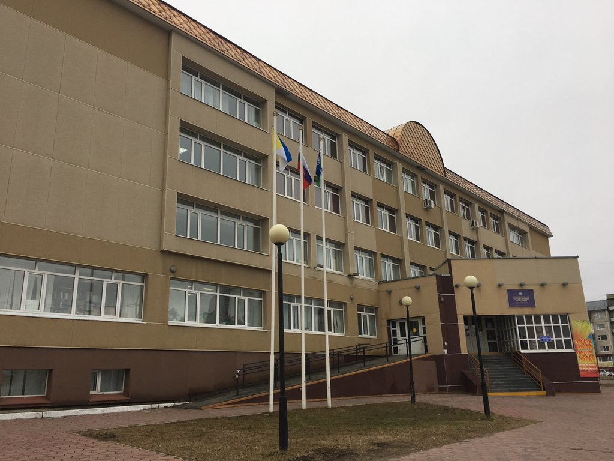

О корпусе
Факультет информационных технологий и математики располагается в корпусе №4 вместе с факультетом экологии и инжиринга.
Адрес: 628605, Тюменская область, Ханты-Мансийский Автономный округ, г. Нижневартовск, ул. Дзержинского, 11.
Номер телефона деканата ФИТиМ: 8 (3466) 45-90-44